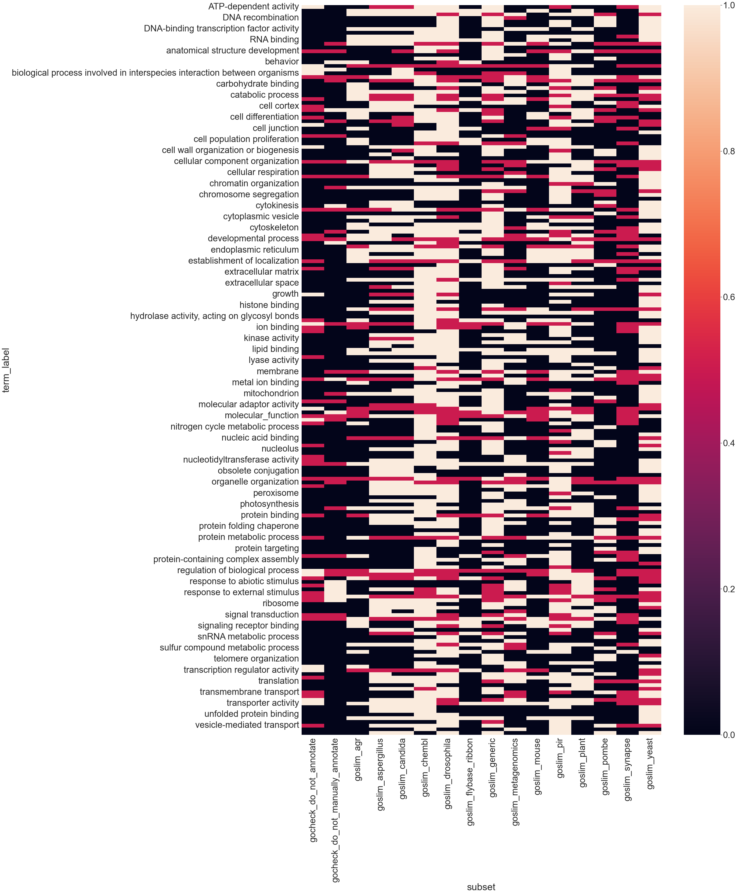
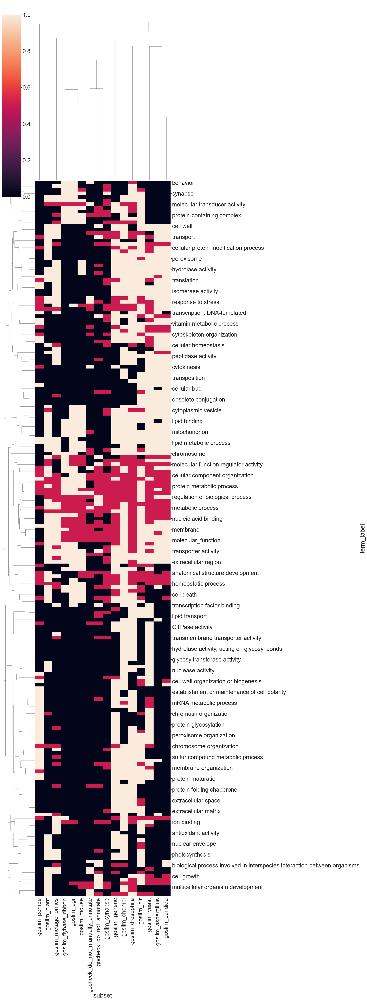
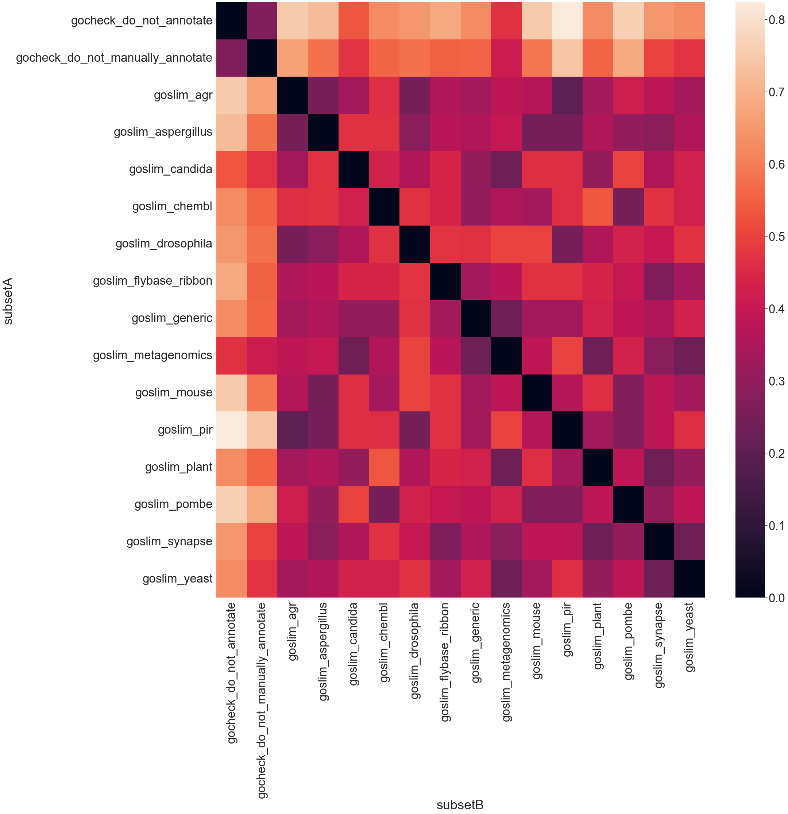
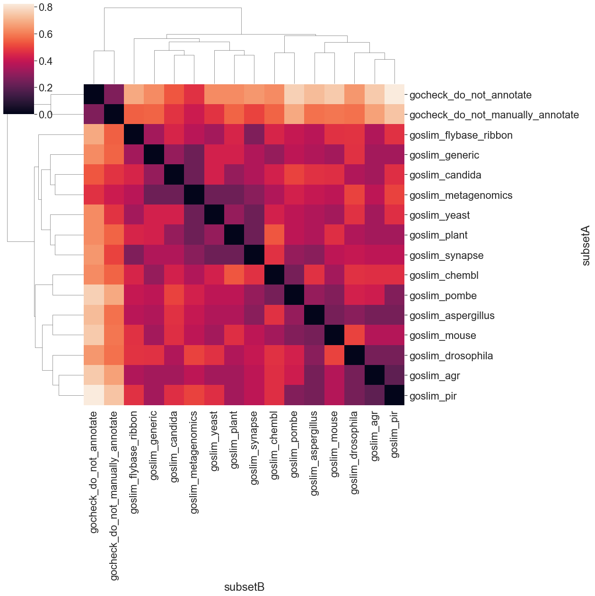

GO Subset Analysis
This is a demonstrator for some functionality in OAK
Dependencies
We will use seaborn for plotting
[9]:
!pip install seaborn
Requirement already satisfied: seaborn in /Users/cjm/Library/Caches/pypoetry/virtualenvs/oaklib-OeQZizwE-py3.9/lib/python3.9/site-packages (0.11.2)
Requirement already satisfied: numpy>=1.15 in /Users/cjm/Library/Caches/pypoetry/virtualenvs/oaklib-OeQZizwE-py3.9/lib/python3.9/site-packages (from seaborn) (1.22.3)
Requirement already satisfied: scipy>=1.0 in /Users/cjm/Library/Caches/pypoetry/virtualenvs/oaklib-OeQZizwE-py3.9/lib/python3.9/site-packages (from seaborn) (1.6.1)
Requirement already satisfied: matplotlib>=2.2 in /Users/cjm/Library/Caches/pypoetry/virtualenvs/oaklib-OeQZizwE-py3.9/lib/python3.9/site-packages (from seaborn) (3.5.1)
Requirement already satisfied: pandas>=0.23 in /Users/cjm/Library/Caches/pypoetry/virtualenvs/oaklib-OeQZizwE-py3.9/lib/python3.9/site-packages (from seaborn) (1.4.1)
Requirement already satisfied: fonttools>=4.22.0 in /Users/cjm/Library/Caches/pypoetry/virtualenvs/oaklib-OeQZizwE-py3.9/lib/python3.9/site-packages (from matplotlib>=2.2->seaborn) (4.31.2)
Requirement already satisfied: python-dateutil>=2.7 in /Users/cjm/Library/Caches/pypoetry/virtualenvs/oaklib-OeQZizwE-py3.9/lib/python3.9/site-packages (from matplotlib>=2.2->seaborn) (2.8.2)
Requirement already satisfied: pyparsing>=2.2.1 in /Users/cjm/Library/Caches/pypoetry/virtualenvs/oaklib-OeQZizwE-py3.9/lib/python3.9/site-packages (from matplotlib>=2.2->seaborn) (2.4.7)
Requirement already satisfied: pillow>=6.2.0 in /Users/cjm/Library/Caches/pypoetry/virtualenvs/oaklib-OeQZizwE-py3.9/lib/python3.9/site-packages (from matplotlib>=2.2->seaborn) (9.1.0)
Requirement already satisfied: cycler>=0.10 in /Users/cjm/Library/Caches/pypoetry/virtualenvs/oaklib-OeQZizwE-py3.9/lib/python3.9/site-packages (from matplotlib>=2.2->seaborn) (0.11.0)
Requirement already satisfied: packaging>=20.0 in /Users/cjm/Library/Caches/pypoetry/virtualenvs/oaklib-OeQZizwE-py3.9/lib/python3.9/site-packages (from matplotlib>=2.2->seaborn) (21.3)
Requirement already satisfied: kiwisolver>=1.0.1 in /Users/cjm/Library/Caches/pypoetry/virtualenvs/oaklib-OeQZizwE-py3.9/lib/python3.9/site-packages (from matplotlib>=2.2->seaborn) (1.4.2)
Requirement already satisfied: pytz>=2020.1 in /Users/cjm/Library/Caches/pypoetry/virtualenvs/oaklib-OeQZizwE-py3.9/lib/python3.9/site-packages (from pandas>=0.23->seaborn) (2022.1)
Requirement already satisfied: six>=1.5 in /Users/cjm/Library/Caches/pypoetry/virtualenvs/oaklib-OeQZizwE-py3.9/lib/python3.9/site-packages (from python-dateutil>=2.7->matplotlib>=2.2->seaborn) (1.16.0)
[10]:
import seaborn as sns
import matplotlib.pyplot as plt
import pandas as pd
import scipy.spatial as sp, scipy.cluster.hierarchy as hc
[7]:
from oaklib.implementations.sqldb.sql_implementation import SqlImplementation
from oaklib.resource import OntologyResource
from oaklib.datamodels.vocabulary import IS_A, PART_OF
from oaklib.utilities.subsets.subset_analysis import compare_all_subsets, get_subset_dict, terms_by_subsets
from pathlib import Path
Establish a database connection
For purposes here we will use a sqlite3 db (created using semantic-sql)
[4]:
# TODO - download step
oi = SqlImplementation(OntologyResource(slug=f'sqlite:///input/go.db'))
[5]:
list(oi.all_subset_curies())
[5]:
['chebi_ph7_3',
'3_STAR',
'1_STAR',
'goslim_plant',
'goslim_pir',
'goslim_flybase_ribbon',
'goslim_chembl',
'goslim_agr',
'goslim_metagenomics',
'goslim_yeast',
'goslim_pombe',
'gocheck_do_not_annotate',
'goslim_generic',
'goslim_drosophila',
'goslim_candida',
'goslim_aspergillus',
'gocheck_do_not_manually_annotate',
'goslim_synapse',
'goslim_mouse',
'SOFA',
'Alliance_of_Genome_Resources',
'biosapiens']
Generate a term x subset Dataframe
We use terms_by_subsets from subset_utils
[8]:
txs = list(terms_by_subsets(oi, prefix='GO', subsumed_score=0.5, min_subsets=3))
[15]:
txs_df = pd.DataFrame(txs, columns = ['term_id', 'term_label', 'subset', 'present'])
txs_df = txs_df.pivot("term_label", "subset", "present")
txs_df
[15]:
| subset | gocheck_do_not_annotate | gocheck_do_not_manually_annotate | goslim_agr | goslim_aspergillus | goslim_candida | goslim_chembl | goslim_drosophila | goslim_flybase_ribbon | goslim_generic | goslim_metagenomics | goslim_mouse | goslim_pir | goslim_plant | goslim_pombe | goslim_synapse | goslim_yeast |
|---|---|---|---|---|---|---|---|---|---|---|---|---|---|---|---|---|
| term_label | ||||||||||||||||
| ATP-dependent activity | 1.0 | 0.0 | 0.0 | 0.5 | 0.5 | 1.0 | 1.0 | 0.0 | 1.0 | 0.0 | 0.0 | 0.5 | 0.0 | 0.0 | 0.5 | 1.0 |
| DNA binding | 0.0 | 0.0 | 1.0 | 1.0 | 1.0 | 1.0 | 1.0 | 1.0 | 1.0 | 0.0 | 1.0 | 0.0 | 1.0 | 0.0 | 0.0 | 1.0 |
| DNA metabolic process | 0.0 | 0.0 | 1.0 | 1.0 | 1.0 | 1.0 | 0.5 | 1.0 | 0.5 | 1.0 | 0.0 | 1.0 | 1.0 | 0.5 | 0.0 | 0.5 |
| DNA recombination | 0.0 | 0.0 | 0.0 | 0.0 | 0.0 | 0.0 | 1.0 | 0.0 | 1.0 | 0.5 | 0.0 | 0.0 | 0.0 | 1.0 | 0.0 | 1.0 |
| DNA repair | 0.0 | 0.0 | 0.0 | 0.0 | 0.0 | 0.0 | 1.0 | 0.0 | 1.0 | 0.0 | 0.0 | 1.0 | 0.0 | 1.0 | 0.0 | 1.0 |
| ... | ... | ... | ... | ... | ... | ... | ... | ... | ... | ... | ... | ... | ... | ... | ... | ... |
| vacuole | 0.0 | 0.0 | 1.0 | 1.0 | 1.0 | 1.0 | 1.0 | 1.0 | 1.0 | 0.0 | 1.0 | 1.0 | 1.0 | 0.0 | 0.0 | 1.0 |
| vacuole organization | 0.0 | 0.0 | 0.0 | 0.0 | 0.0 | 0.0 | 1.0 | 0.0 | 0.5 | 0.0 | 0.0 | 1.0 | 0.0 | 0.0 | 0.0 | 1.0 |
| vesicle-mediated transport | 0.5 | 0.0 | 0.0 | 1.0 | 1.0 | 1.0 | 1.0 | 0.0 | 1.0 | 0.0 | 0.0 | 1.0 | 0.0 | 1.0 | 0.5 | 0.5 |
| virion component | 0.0 | 0.0 | 0.0 | 0.0 | 0.0 | 1.0 | 0.0 | 0.0 | 0.0 | 1.0 | 0.0 | 1.0 | 0.0 | 0.0 | 0.0 | 0.0 |
| vitamin metabolic process | 0.0 | 0.0 | 0.0 | 1.0 | 1.0 | 0.0 | 1.0 | 0.0 | 1.0 | 0.0 | 0.0 | 1.0 | 0.0 | 1.0 | 0.0 | 1.0 |
198 rows × 16 columns
[17]:
plt.figure(figsize = (30,50))
sns.set(font_scale = 3)
ax = sns.heatmap(txs_df)

Clustering of terms and subset
[25]:
#plt.figure(figsize = (30,30))
#plt.xticks(rotation=45)
sns.set(font_scale = 3)
ax = sns.clustermap(txs_df, figsize = (30,80))

Overlap Analysis
First we do a basic overlap of terms in subsets - no use of the graph
[19]:
pairs = list(compare_all_subsets(oi, prefix='GO'))
[20]:
def pairs_to_dm(pairs):
"""
Create a distance matrix
"""
rows = [(p.set1_id, p.set2_id, 1-p.jaccard_similarity) for p in pairs]
df = pd.DataFrame(rows, columns =['subsetA', 'subsetB', 'sim'])
df = df.pivot("subsetA", "subsetB", "sim")
return df
[21]:
df = pairs_to_dm(pairs)
df
[21]:
| subsetB | gocheck_do_not_annotate | gocheck_do_not_manually_annotate | goslim_agr | goslim_aspergillus | goslim_candida | goslim_chembl | goslim_drosophila | goslim_flybase_ribbon | goslim_generic | goslim_metagenomics | goslim_mouse | goslim_pir | goslim_plant | goslim_pombe | goslim_synapse | goslim_yeast |
|---|---|---|---|---|---|---|---|---|---|---|---|---|---|---|---|---|
| subsetA | ||||||||||||||||
| gocheck_do_not_annotate | 0.000000 | 0.266667 | 0.750000 | 0.722222 | 0.533333 | 0.625000 | 0.647059 | 0.684211 | 0.625000 | 0.466667 | 0.750000 | 0.823529 | 0.625000 | 0.764706 | 0.647059 | 0.625000 |
| gocheck_do_not_manually_annotate | 0.266667 | 0.000000 | 0.666667 | 0.578947 | 0.470588 | 0.555556 | 0.578947 | 0.550000 | 0.555556 | 0.411765 | 0.588235 | 0.736842 | 0.555556 | 0.684211 | 0.500000 | 0.470588 |
| goslim_agr | 0.750000 | 0.666667 | 0.000000 | 0.250000 | 0.333333 | 0.461538 | 0.250000 | 0.357143 | 0.333333 | 0.384615 | 0.363636 | 0.200000 | 0.333333 | 0.416667 | 0.384615 | 0.333333 |
| goslim_aspergillus | 0.722222 | 0.578947 | 0.250000 | 0.000000 | 0.466667 | 0.466667 | 0.285714 | 0.375000 | 0.357143 | 0.400000 | 0.250000 | 0.250000 | 0.357143 | 0.307692 | 0.285714 | 0.357143 |
| goslim_candida | 0.533333 | 0.470588 | 0.333333 | 0.466667 | 0.000000 | 0.428571 | 0.357143 | 0.437500 | 0.307692 | 0.230769 | 0.461538 | 0.461538 | 0.307692 | 0.500000 | 0.357143 | 0.428571 |
| goslim_chembl | 0.625000 | 0.555556 | 0.461538 | 0.466667 | 0.428571 | 0.000000 | 0.466667 | 0.437500 | 0.307692 | 0.357143 | 0.333333 | 0.461538 | 0.533333 | 0.250000 | 0.466667 | 0.428571 |
| goslim_drosophila | 0.647059 | 0.578947 | 0.250000 | 0.285714 | 0.357143 | 0.466667 | 0.000000 | 0.470588 | 0.466667 | 0.500000 | 0.500000 | 0.250000 | 0.357143 | 0.428571 | 0.400000 | 0.466667 |
| goslim_flybase_ribbon | 0.684211 | 0.550000 | 0.357143 | 0.375000 | 0.437500 | 0.437500 | 0.470588 | 0.000000 | 0.333333 | 0.375000 | 0.466667 | 0.466667 | 0.437500 | 0.400000 | 0.266667 | 0.333333 |
| goslim_generic | 0.625000 | 0.555556 | 0.333333 | 0.357143 | 0.307692 | 0.307692 | 0.466667 | 0.333333 | 0.000000 | 0.230769 | 0.333333 | 0.333333 | 0.428571 | 0.384615 | 0.357143 | 0.428571 |
| goslim_metagenomics | 0.466667 | 0.411765 | 0.384615 | 0.400000 | 0.230769 | 0.357143 | 0.500000 | 0.375000 | 0.230769 | 0.000000 | 0.384615 | 0.500000 | 0.230769 | 0.428571 | 0.285714 | 0.230769 |
| goslim_mouse | 0.750000 | 0.588235 | 0.363636 | 0.250000 | 0.461538 | 0.333333 | 0.500000 | 0.466667 | 0.333333 | 0.384615 | 0.000000 | 0.363636 | 0.461538 | 0.272727 | 0.384615 | 0.333333 |
| goslim_pir | 0.823529 | 0.736842 | 0.200000 | 0.250000 | 0.461538 | 0.461538 | 0.250000 | 0.466667 | 0.333333 | 0.500000 | 0.363636 | 0.000000 | 0.333333 | 0.272727 | 0.384615 | 0.461538 |
| goslim_plant | 0.625000 | 0.555556 | 0.333333 | 0.357143 | 0.307692 | 0.533333 | 0.357143 | 0.437500 | 0.428571 | 0.230769 | 0.461538 | 0.333333 | 0.000000 | 0.384615 | 0.230769 | 0.307692 |
| goslim_pombe | 0.764706 | 0.684211 | 0.416667 | 0.307692 | 0.500000 | 0.250000 | 0.428571 | 0.400000 | 0.384615 | 0.428571 | 0.272727 | 0.272727 | 0.384615 | 0.000000 | 0.307692 | 0.384615 |
| goslim_synapse | 0.647059 | 0.500000 | 0.384615 | 0.285714 | 0.357143 | 0.466667 | 0.400000 | 0.266667 | 0.357143 | 0.285714 | 0.384615 | 0.384615 | 0.230769 | 0.307692 | 0.000000 | 0.230769 |
| goslim_yeast | 0.625000 | 0.470588 | 0.333333 | 0.357143 | 0.428571 | 0.428571 | 0.466667 | 0.333333 | 0.428571 | 0.230769 | 0.333333 | 0.461538 | 0.307692 | 0.384615 | 0.230769 | 0.000000 |
[22]:
import matplotlib.pyplot as plt
plt.figure(figsize = (30,30))
sns.set(font_scale = 3)
ax = sns.heatmap(df)

[23]:
plt.figure(figsize = (80,80))
sns.set(font_scale = 2)
linkage = hc.linkage(sp.distance.squareform(df), method='average')
ax = sns.clustermap(df, row_linkage=linkage, col_linkage=linkage, figsize=(18,18))
<Figure size 5760x5760 with 0 Axes>

Overlap using the graph
[24]:
pairs = list(compare_all_subsets(oi, prefix='GO', extend_down=True))
[38]:
df = pairs_to_dm(pairs)
[39]:
linkage = hc.linkage(sp.distance.squareform(df), method='average')
ax = sns.clustermap(df, row_linkage=linkage, col_linkage=linkage, figsize=(18,18))
[ ]: